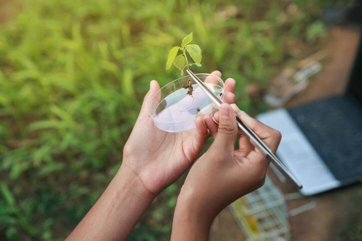
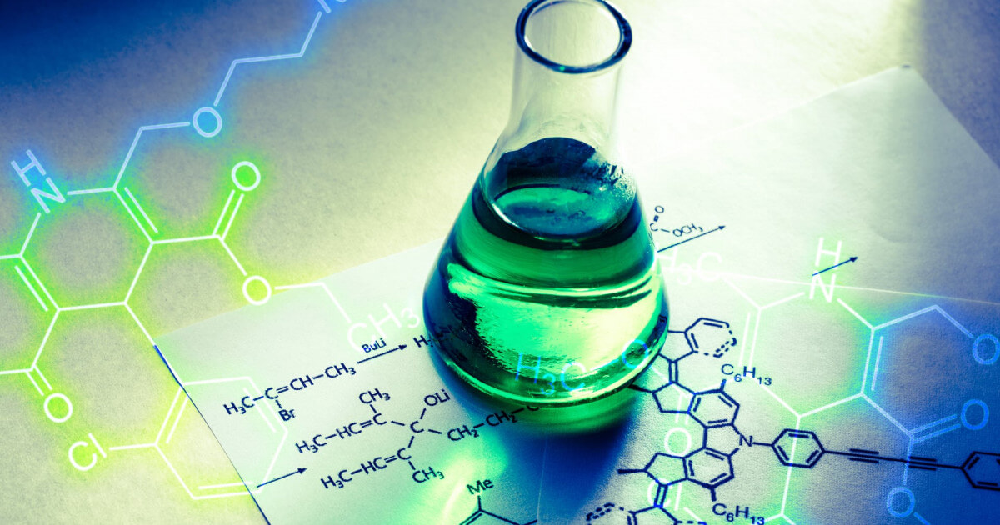

bienvenido administrador
Bienvenido Administrador estás viendo los Indicadores Emocionales del estudiante Daniel Larusso en relación con cada diplomado.
botánica
profesor: señor miyagui
horario: 9:00 am - 11:00 am
martes y jueves
Describe cómo los sistemas biológicos se mantienen productivos con el transcurso del tiempo. Se refiere al equilibrio de una especie con los recursos de su entorno.
sostenibilidad ambiental
profesor: terry silver
horario: 9:00 am - 11:00 am
lunes y viernes
Describe cómo los sistemas biológicos se mantienen productivos con el transcurso del tiempo. Se refiere al equilibrio de una especie con los recursos de su entorno.
química
profesor: jhon kreese
horario: 9:00 am - 11:00 am
martes y jueves
Describe cómo los sistemas biológicos se mantienen productivos con el transcurso del tiempo. Se refiere al equilibrio de una especie con los recursos de su entorno.